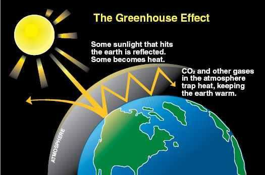
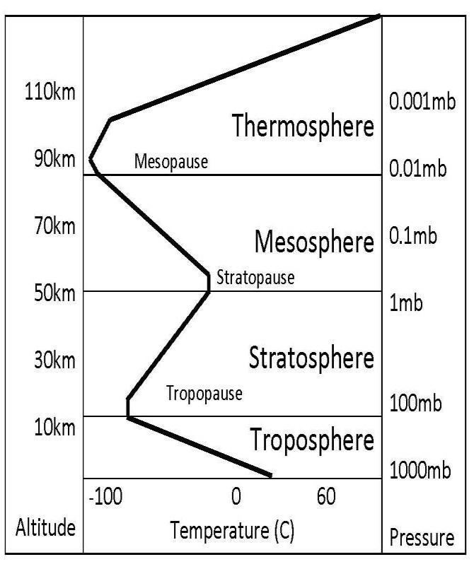

1d. Protection from Meteorites
1 ডি. উল্কা থেকে সুরক্ষা
The atmosphere protects us from the meteorite as well. They are burned down to the smaller sizes when they pass through the atmosphere.
বায়ুমণ্ডল আমাদের উল্কাপিণ্ড থেকেও রক্ষা করে। বায়ুমণ্ডলের মধ্য দিয়ে যাওয়ার সময় এগুলি ছোট আকারে পুড়ে যায়।
FIGURE 2.4: Falling Asteroid

চিত্র 2_4 / Figure 2_4
চিত্র 2.4: পতনশীল গ্রহাণু
চিত্র 2_4 / Figure 2_4
So, the sky of the Earth has been made a canopy. 2. Sending down Rain from the Sky
তাই পৃথিবীর আকাশকে ছাউনি বানানো হয়েছে। 2. আকাশ থেকে বৃষ্টি বর্ষণ করা
The top layers of atmosphere works as canopy, but the bottom layers causes rain, as the verses simultaneously say: ―…who has made the land your couch and the skies your canopy, and sent down rain from the skies…‖ Air can absorb great amount of water vapor. The clouds form and float in the Troposphere mainly. In this layer, the temperature rapidly decreases and forms the clouds.
বায়ুমণ্ডলের উপরের স্তরগুলি চাঁদোয়া হিসাবে কাজ করে, কিন্তু নীচের স্তরগুলি বৃষ্টির কারণ হয়, যেমন আয়াতগুলি একই সাথে বলে: "...যিনি জমিকে আপনার পালঙ্ক এবং আকাশকে আপনার ছাউনি বানিয়েছেন এবং আকাশ থেকে বৃষ্টি বর্ষণ করেছেন..." বায়ু প্রচুর পরিমাণে জলীয় বাষ্প শোষণ করতে পারে। মেঘগুলি প্রধানত ট্রপোস্ফিয়ারে তৈরি এবং ভাসমান। এই স্তরে, তাপমাত্রা দ্রুত হ্রাস পায় এবং মেঘ তৈরি করে।
FIGURE 2.5: Temperature Curve

চিত্র 2_5 / Figure 2_5
চিত্র 2.5: তাপমাত্রা বক্ররেখা
চিত্র 2_5 / Figure 2_5
The floating clouds turn back from the height of 12 km. Layers beyond that height are meant to protect us from harmful radiations; much of water vapor is not allowed to rise there. There is no scientific explanation why the rise and fall of temperature is so peculiar in the layers of atmosphere? It is just nature, designed and sustained by Allah. So, the ‗Skies of the Earth‘ has been made a canopy.
ভাসমান মেঘগুলি 12 কিলোমিটার উচ্চতা থেকে ফিরে আসে। সেই উচ্চতার বাইরের স্তরগুলি ক্ষতিকারক বিকিরণ থেকে আমাদের রক্ষা করার জন্য; সেখানে অনেক জলীয় বাষ্প উঠতে দেওয়া হয় না। বায়ুমণ্ডলের স্তরগুলিতে তাপমাত্রার বৃদ্ধি এবং পতন কেন এত অদ্ভুত হয় তার কোনও বৈজ্ঞানিক ব্যাখ্যা নেই? এটা শুধুমাত্র প্রকৃতি, আল্লাহর দ্বারা পরিকল্পিত এবং টেকসই. তাই ‘পৃথিবীর আকাশ’কে ছাউনি বানানো হয়েছে।
3. The Land has been made a Couch
3. জমি একটি পালঙ্ক করা হয়েছে
The Earth is producing living creatures for billions of years. The long deposit of organic decay has made the crust suitable for us. The drifting continents formed the high mountain ranges that produced rivers, a major source of sweat water. The raining sky revives the lands again and again. It raises the ground water to make the Earth fertile. So, the land has been transformed into a couch by creating a soft soil crust, full of living organisms that help drive the cycle of life.
পৃথিবী কোটি কোটি বছর ধরে জীবন্ত প্রাণীর জন্ম দিচ্ছে। জৈব ক্ষয়ের দীর্ঘ জমা ভূত্বকটিকে আমাদের জন্য উপযুক্ত করে তুলেছে। প্রবাহিত মহাদেশগুলি উচ্চ পর্বতশ্রেণী তৈরি করেছিল যা নদীগুলি তৈরি করেছিল, যা ঘামের জলের একটি প্রধান উত্স। বর্ষার আকাশ জমিনকে বারবার পুনরুজ্জীবিত করে। এটি পৃথিবীকে উর্বর করার জন্য ভূগর্ভস্থ পানি বাড়ায়। সুতরাং, ভূমি একটি নরম মাটির ভূত্বক তৈরি করে একটি পালঙ্কে রূপান্তরিত হয়েছে, জীবিত প্রাণীতে পূর্ণ যা জীবনের চক্রকে চালিত করতে সহায়তা করে।
4. To Conclude:
4. উপসংহারে:
In old times, people did not know. Now we know. Thus, the verses say us at the end of the paragraph: ―…then set not up rivals unto Allah, when you know.‖
প্রাচীনকালে মানুষ জানত না। এখন আমরা জানি. সুতরাং, আয়াতটি অনুচ্ছেদের শেষে আমাদের বলে: "...অতঃপর আল্লাহর সাথে প্রতিদ্বন্দ্বী স্থির করো না, যখন তোমরা জান।"
And if you are in doubt as to what We have revealed from time to time to Our servant, then produce a surah like thereunto, and call your witnesses or helpers besides Allah if your (doubts) are true. But if you cannot, and of a surety you cannot, then guard against the Fire whose fuel is men and stones, which is prepared for those who reject Faith.
আর যদি আমার বান্দার প্রতি আমরা যা নাযিল করেছি সে ব্যাপারে যদি তোমরা সন্দেহে থাক, তাহলে তার মত একটি সূরা তৈরি কর এবং আল্লাহকে বাদ দিয়ে তোমাদের সাক্ষী বা সাহায্যকারীদের ডাক, যদি তোমাদের (সন্দেহ) সত্য হয়ে থাকে। কিন্তু যদি না পারো, এবং নিশ্চিতভাবে তুমি পারবে না, তাহলে আগুন থেকে হেফাজত করো যার জ্বালানী হবে মানুষ ও পাথর, যা প্রস্তুত করা হয়েছে কাফেরদের জন্য।
The Quran proves its divinity by focusing on the science of creation. But, one may not have the knowledge of science. So, it has suggested another way to test its divinity—a challenge is put forward: ―…produce a surah like thereunto…‖ Hafez could not write like Saadi, and Saadi could not write like Hafez. The rhythm and lyric of each poet is different. Allah knows it; He knows that everyone‘s finger print is unique; He knows that every date is different: ―...clusters of dates hanging low and near, and gardens of grapes, and olives, and pomegranates, each similar, yet different‖ [Al Quran 6:99] Thus, the Quran is not saying about the style of writing. The Quran is saying that it is Guidance. The Quran is saying that it is full of Truth. The Quran is saying that it has no contradiction. A human cannot produce such Book. The Quran is guiding its followers through the hard path and surviving undaunted over the time and time ahead. More than 1400 years have passed; the Quran has proved itself. It is deeply rooted in human civilization as the real Book of Guidance, complete and perfect in all aspects. The Quran was fit to teach the Arab Bedouins, and the same ancient Quran is fit to teach the 'giants of knowledge' living today. A human or a team cannot produce such a Book. It is from the Creator of the Universes.
কুরআন সৃষ্টির বিজ্ঞানকে কেন্দ্র করে তার দেবত্ব প্রমাণ করে। কিন্তু, বিজ্ঞানের জ্ঞান নাও থাকতে পারে। সুতরাং, এটি তার দেবত্ব পরীক্ষা করার জন্য অন্য একটি উপায়ের পরামর্শ দিয়েছে- একটি চ্যালেঞ্জ সামনে রাখা হয়েছে: "...এর মতো একটি সূরা তৈরি করুন..." হাফেজ সাদীর মতো লিখতে পারেননি এবং সাদী হাফেজের মতো লিখতে পারেননি। একেক কবির ছন্দ ও গীতিকবিতা একেক রকম। আল্লাহ তা জানেন; তিনি জানেন যে প্রত্যেকের আঙুলের ছাপ অনন্য; তিনি জানেন যে প্রতিটি খেজুরই আলাদা: "...নিচু এবং কাছাকাছি ঝুলন্ত খেজুরের গুচ্ছ, এবং আঙ্গুর, জলপাই এবং ডালিমের বাগান, প্রতিটি একই রকম তবে ভিন্ন" [আল কুরআন 6:99] সুতরাং, কুরআন লেখার ধরন সম্পর্কে বলছে না। কোরান বলছে এটা হেদায়েত। কুরআন বলছে এটা সত্যে পরিপূর্ণ। কোরান বলছে এর কোন অসঙ্গতি নেই। মানুষ এমন কিতাব তৈরি করতে পারে না। কুরআন তার অনুসারীদেরকে কঠিন পথে পরিচালিত করছে এবং সামনের সময় ও সময়ে নিঃশব্দে বেঁচে আছে। 1400 বছরেরও বেশি সময় কেটে গেছে; কুরআন নিজেই প্রমাণ করেছে। এটি মানব সভ্যতার মধ্যে গভীরভাবে প্রোথিত রয়েছে প্রকৃত নির্দেশনামূলক গ্রন্থ, সমস্ত দিক থেকে সম্পূর্ণ এবং নিখুঁত। কুরআন আরব বেদুইনদের শেখানোর জন্য উপযুক্ত ছিল, এবং একই প্রাচীন কুরআন বর্তমান 'জ্ঞানের দৈত্যদের' শেখানোর জন্য উপযুক্ত। একটি মানুষ বা একটি দল এমন একটি বই তৈরি করতে পারে না। এটা মহাবিশ্বের স্রষ্টার কাছ থেকে।
But give glad tidings to those who believe and work righteousness that their portion is Jannaat, beneath which flow rivers. Every time they are fed with fruits there-from, they say: "Why, this is what we were fed with before"; for they are given things in similitude. And they have therein companions pure, and they abide therein.
তবে যারা ঈমান আনে ও সৎকাজ করে তাদেরকে সুসংবাদ দাও যে, তাদের অংশ জান্নাত, যার তলদেশে নদী প্রবাহিত। যখনই তাদের সেখান থেকে ফল খাওয়ানো হয়, তারা বলে: "কেন, আমাদের আগেও এই খাওয়ানো হয়েছিল"; কারণ তাদের উপমায় জিনিস দেওয়া হয়েছে। আর সেখানে তাদের পবিত্র সঙ্গী রয়েছে এবং তারা সেখানেই থাকবে।
In view of the Quran, the paradise is not a spiritual thing. It is a reality like the Earth with beautiful lands, plants, fruits, animals and companions pure. So, it is worthy of striving hard. One day the people that believe and work righteousness will escape from this universe (Samawaat) to live in the peaceful planets of Jannaat (another universe) forever, because…their portion is Jannaat.
কুরআনের দৃষ্টিতে জান্নাত কোন আধ্যাত্মিক জিনিস নয়। সুন্দর জমি, গাছপালা, ফল, পশুপাখি ও সঙ্গী বিশুদ্ধ নিয়ে এটি পৃথিবীর মতো একটি বাস্তবতা। সুতরাং, এটি কঠোর প্রচেষ্টার যোগ্য। একদিন যারা বিশ্বাস করে এবং সৎকর্ম করে তারা এই মহাবিশ্ব (সামাওয়াত) থেকে চিরতরে জান্নাতের (অন্য মহাবিশ্বের) শান্তিপূর্ণ গ্রহে বসবাস করবে, কারণ... তাদের অংশ জান্নাত।
Indeed, Allah disdains not to use the similitude of things, even of a mosquito or what is on top of it. And those who have believed know that it is the truth from their Lord, but as for those who disbelieve, they say: "What did Allah intend by this as an example?" He misleads many thereby and guides many thereby. And He misleads not except the defiantly disobedient, those who break Allah's covenant (taken as Bayah to Islamic Leadership) after it is ratified, and who sunder what Allah has ordered to be joined (breaks unity) and do mischief on land. It is those who are the losers. How can you reject the faith in Allah seeing that you were without life and He gave you life? Then He will cause you to die, and will again bring you to life, and again to Him will you return.
বস্তুতপক্ষে, আল্লাহ কোন জিনিসের উপমা ব্যবহার না করাকে অপছন্দ করেন, এমনকি মশা বা তার উপরে যা আছে। আর যারা ঈমান এনেছে তারা জানে যে এটা তাদের পালনকর্তার পক্ষ থেকে সত্য, কিন্তু যারা অবিশ্বাস করে, তারা বলেঃ এর দ্বারা আল্লাহ কি চেয়েছিলেন উদাহরণ হিসেবে? সে এর মাধ্যমে অনেককে বিভ্রান্ত করে এবং অনেককে পথ দেখায়। এবং তিনি অবাধ্যদের ছাড়া আর বিভ্রান্ত করেন না, যারা আল্লাহর অঙ্গীকার (ইসলামী নেতৃত্বে বায়আহ হিসাবে গ্রহণ করা হয়েছে) অনুমোদনের পর ভঙ্গ করে এবং যারা আল্লাহ যা সংযুক্ত করার আদেশ দিয়েছেন তা ভেঙে দেয় (একতা ভঙ্গ করে) এবং জমিতে ফাসাদ করে। তারাই ক্ষতিগ্রস্ত। কিভাবে আপনি আল্লাহর প্রতি বিশ্বাস অস্বীকার করবেন যে আপনি জীবনহীন ছিলেন এবং তিনি আপনাকে জীবন দিয়েছেন? অতঃপর তিনি তোমাদের মৃত্যু ঘটাবেন, আবার তোমাদেরকে পুনরুজ্জীবিত করবেন এবং আবার তাঁর কাছেই ফিরে আসবেন।
There are many scientific verses embedded in the Quran as the signs of its divinity. But, everybody does not have the knowledge of science. So, the verses of scientific signs are often narrated with examples of similar things in a way that the verses make some sense to all. For example, ―mosquito or what is on top of it‖ are similitude of small things to a reader without the knowledge of science. But it is a sign of divinity to a person having the knowledge of science. Now it is discovered that there are parasites that get attached to the mosquitoes and suck blood. The above verses mention the parasite as ―what is on top of it‖. Allah has put a human on the Earth to test and decide his eternal destination. So, the scopes to disbelieve are kept open in the Quran. For example, the Quran says that Allah has made the land our couch and the skies our canopy. Allah could describe magnetosphere and atmospheric layers to explain how these work as canopy. He could describe how the land has been made couch by producing the soft soil crust. But Allah has not done it, because it would spoil earthly test environment. Now too, when the science has developed, a Believer relates the canopies with magnetosphere and atmospheric layers, and a Disbeliever thinks the Believer‘s thought as wishful thinking. Thus, the scientific signs are described in a way that even when science is developed, a Disbeliever can choose to disbelieve. Therefore, the verses strengthen Believer‘s faith, and a Disbeliever remains Disbeliever, as the verses under discussion say: ―He misleads many thereby and guides many thereby.‖ The same thing is done everywhere. We understand that this fine-tuned universe resulted from the acts of Allah, but Disbelievers fail to relate and think it as a result of accidents and unguided evolutions. They too have scientific logics in their favor, as we have in our favor. However, many of our proofs are based on definite discoveries, and they rely on theories and hypotheses mainly. In the probability of accidental creation, only one out of trillions of planets would be suitable for a creature like us. The Disbelievers are willing to accept the existence of trillions, instead of believing in one God, even though only a few stars show remote signs of having any planets. It is mathematically proved that the simplest DNA molecule, which could replicate and produce another similar creature, could not come up through accidents. It needed designing by an extraordinarily intelligent being, no less than the God of the Quran, but the Disbelievers do not believe. Allah developed the ‗program of life‘ as the DNA Code, which can form a human body with highly developed brain, nervous system, eyes, ears, skin, etc. Thus, the verses under discussion say: ―…you (you as soul in spiritual world) were without life (without physical life), and He gave you life (physical life from the DNA code)...‖ Life on the Earth is short, but it will be repeated: ―…then He will cause you to die, and will again bring you to life, and again to Him will you return‖ But it does not touch the heart of an idolater. Actually, people destined to the hell will not believe. They are ever distracted by the satan jinns, mounted on them. Allah protects the Faiths of Believers, except of the defiantly disobedient, those who break Allah's covenant (breaks bayah made to Islamic Leadership) after it is ratified, and who sunder what Allah has ordered to be joined (unity) and do mischief on land. Actually, Allah knows everybody precisely. The test is arranged to settle the arguments of the losers.
কুরআনে এর দেবত্বের নিদর্শন হিসেবে অনেক বৈজ্ঞানিক আয়াত রয়েছে। কিন্তু, বিজ্ঞানের জ্ঞান সবার নেই। সুতরাং, বৈজ্ঞানিক লক্ষণের আয়াতগুলি প্রায়শই অনুরূপ জিনিসগুলির উদাহরণ সহ এমনভাবে বর্ণনা করা হয় যাতে আয়াতগুলি সকলের কাছে কিছু অর্থবোধ করে। উদাহরণস্বরূপ, "মশা বা এর উপরে যা আছে" বিজ্ঞানের জ্ঞান ছাড়াই পাঠকের কাছে ছোট জিনিসের উপমা। কিন্তু বিজ্ঞানের জ্ঞান থাকা ব্যক্তির কাছে এটি দেবত্বের লক্ষণ। এখন এটি আবিষ্কৃত হয়েছে যে এমন পরজীবী রয়েছে যা মশার সাথে লেগে থাকে এবং রক্ত চুষে খায়। উপরের আয়াতে পরজীবীটিকে উল্লেখ করা হয়েছে "এর উপরে যা আছে"। আল্লাহ একজন মানুষকে পরীক্ষা করে তার চিরস্থায়ী গন্তব্য নির্ধারণের জন্য পৃথিবীতে রেখেছেন। সুতরাং, কুরআনে অবিশ্বাসের সুযোগ উন্মুক্ত রাখা হয়েছে। উদাহরণস্বরূপ, কুরআন বলে যে আল্লাহ জমিনকে আমাদের পালঙ্ক এবং আকাশকে আমাদের ছাউনি বানিয়েছেন। আল্লাহ চুম্বকমণ্ডল এবং বায়ুমণ্ডলীয় স্তরগুলিকে ব্যাখ্যা করতে পারেন যে কীভাবে এগুলি ছাউনি হিসাবে কাজ করে। তিনি বর্ণনা করতে পারেন কিভাবে নরম মাটির ভূত্বক উৎপন্ন করে জমিকে পালঙ্কে পরিণত করা হয়েছে। কিন্তু আল্লাহ তা করেননি, কারণ এতে পার্থিব পরীক্ষার পরিবেশ নষ্ট হবে। এখনও, যখন বিজ্ঞান বিকশিত হয়েছে, একজন আস্তিক চুম্বকমণ্ডল এবং বায়ুমণ্ডলীয় স্তরগুলির সাথে ক্যানোপিগুলিকে সংযুক্ত করে এবং একজন অবিশ্বাসী বিশ্বাসীর চিন্তাভাবনাকে ইচ্ছাকৃত চিন্তা বলে মনে করে। এইভাবে, বৈজ্ঞানিক লক্ষণগুলি এমনভাবে বর্ণনা করা হয়েছে যে বিজ্ঞানের বিকাশের পরেও, একজন অবিশ্বাসী অবিশ্বাস করা বেছে নিতে পারে। অতএব, আয়াতগুলো মুমিনের বিশ্বাসকে শক্তিশালী করে, এবং একজন কাফের অবিশ্বাসীই থেকে যায়, যেমন আলোচ্য আয়াতে বলা হয়েছে: “সে এর মাধ্যমে অনেককে পথভ্রষ্ট করে এবং অনেককে পথ দেখায়।” সর্বত্র একই জিনিস করা হয়। আমরা বুঝতে পারি যে এই সূক্ষ্ম-সুবিধাপূর্ণ মহাবিশ্ব আল্লাহর কর্মের ফলে, কিন্তু কাফেররা একে দুর্ঘটনা এবং অনির্দেশিত বিবর্তনের ফলে সম্পর্কিত করতে এবং মনে করতে ব্যর্থ হয়। তাদের পক্ষেও বৈজ্ঞানিক যুক্তি আছে, যেমন আমাদের পক্ষে আছে। যাইহোক, আমাদের অনেক প্রমাণ নির্দিষ্ট আবিষ্কারের উপর ভিত্তি করে, এবং তারা প্রধানত তত্ত্ব এবং অনুমানের উপর নির্ভর করে। দুর্ঘটনাজনিত সৃষ্টির সম্ভাবনায়, ট্রিলিয়ন গ্রহের মধ্যে কেবল একটি আমাদের মতো প্রাণীর জন্য উপযুক্ত হবে। কাফেররা এক ঈশ্বরে বিশ্বাস করার পরিবর্তে ট্রিলিয়নের অস্তিত্ব স্বীকার করতে ইচ্ছুক, যদিও মাত্র কয়েকটি নক্ষত্রে কোনো গ্রহ থাকার দূরবর্তী লক্ষণ দেখা যায়। এটি গাণিতিকভাবে প্রমাণিত যে সহজতম ডিএনএ অণু, যা প্রতিলিপি তৈরি করতে পারে এবং অন্য একটি অনুরূপ প্রাণী তৈরি করতে পারে, দুর্ঘটনার মাধ্যমে আসতে পারে না। এটি একটি অসাধারণ বুদ্ধিমান সত্তা দ্বারা ডিজাইন করা প্রয়োজন, কুরআনের ঈশ্বরের চেয়ে কম নয়, কিন্তু কাফেররা বিশ্বাস করে না। আল্লাহ ডিএনএ কোড হিসাবে 'জীবনের প্রোগ্রাম' তৈরি করেছেন, যা অত্যন্ত উন্নত মস্তিষ্ক, স্নায়ুতন্ত্র, চোখ, কান, ত্বক ইত্যাদি দিয়ে একটি মানবদেহ গঠন করতে পারে। এইভাবে, আলোচ্য আয়াতগুলি বলে: "... আপনি (আধ্যাত্মিক জগতে আত্মা হিসাবে) জীবনহীন ছিলেন (দৈহিক জীবন ব্যতীত), এবং তিনি আপনাকে জীবন দিয়েছেন (দৈহিক জীবন, পৃথিবীতে এটি সংক্ষিপ্ত জীবন হবে) পুনঃপুনঃ “…অতঃপর তিনি আপনাকে মৃত্যু ঘটাবেন, এবং আপনাকে আবার জীবিত করবেন এবং আবার তাঁর কাছেই ফিরে আসবেন” কিন্তু এটি একজন মুশরিকের হৃদয় স্পর্শ করে না। আসলে, জাহান্নামের ভাগ্য মানুষ বিশ্বাস করবে না। তারা সর্বদা বিভ্রান্ত হয় শয়তান জিনদের দ্বারা, তাদের উপর বসানো। আল্লাহ মুমিনদের ঈমান রক্ষা করেন, যারা অবাধ্যতাকারী ছাড়া, যারা আল্লাহর অঙ্গীকার ভঙ্গ করে (ইসলামী নেতৃত্বে প্রণীত বায়আহ) অনুমোদনের পর, এবং যারা আল্লাহ যাকে যুক্ত করার (একতা) আদেশ দিয়েছেন তা ভেঙে দেয় এবং জমিতে ফাসাদ করে। প্রকৃতপক্ষে, আল্লাহ সুনির্দিষ্টভাবে সবাইকে জানেন। পরাজিতদের তর্ক-বিতর্ক নিষ্পত্তির জন্য এই পরীক্ষার আয়োজন করা হয়।
He the One Who created for you what was in the 'assembly of lands' (ma fi ardi jamian), Moreover, infused His force / gravitational force (thumma istawa) into the Sky (ila i-samai) and fashioned them into Seven Skies, and He of everything is All-Knowing. Remarks:
তিনিই যিনি তোমাদের জন্য 'জমির সমাবেশে' (মা ফি আরদি জামিয়ান) সৃষ্টি করেছেন, তাছাড়া, তাঁর বল/মাধ্যাকর্ষণ শক্তি (থুম্মা ইস্তওয়া) আকাশে (ইলা ই-সামাই) প্রবেশ করান এবং সেগুলোকে সাত আসমানে পরিণত করেছেন, এবং তিনি সবকিছু সম্পর্কে সর্বজ্ঞ। মন্তব্য:
The above mentioned verse suggests that the universe operates in cycles. Additionally, there are verses in the Quran, which explicitly state that the universe was created at the beginning of the preceding cycle (first cycle).
উপরে উল্লিখিত আয়াতটি পরামর্শ দেয় যে মহাবিশ্ব চক্রে চলে। অতিরিক্তভাবে, কুরআনে এমন আয়াত রয়েছে, যা স্পষ্টভাবে বলে যে মহাবিশ্ব সৃষ্টি হয়েছিল পূর্ববর্তী চক্রের (প্রথম চক্র) শুরুতে।